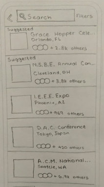
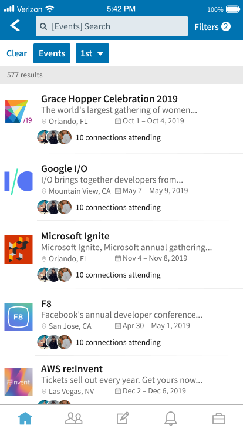
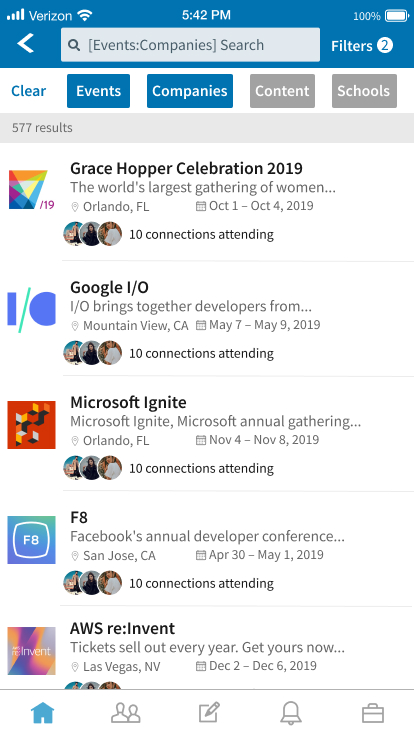

LinkedIn: Event Groups
Efficiently coordinating LinkedIn members who are attending the same events.
Collaborators:
Roshan Fernando, Prabhav Khandelwal
Advised by Professor Philip Guo
My Role:
UX Designer / Researcher
Delivered: Primary research, secondary research, concept development, low-fi/hi-fi wireframes, team management, case study content strategy
Sketch

Paper Prototype

High Fidelity Mockup

Latest Solution
